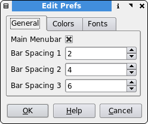

Edit Preferences
Description
Set and edit any system wide defaults.

Here is the edit preferences dialog. The available settings you may edit are:
- General
- Main Menubar - Toggles the main menu bar on/off.
- Bar Spacing 1,2,3 - Set the values of the pixel space of the quick change bar spacing buttons
- Colors
- Color Background - Background color used for all charts.
- Color Border - Color used for drawing text, ticks, lines and specific areas on a chart eg. date area
- Color Grid - Color used for the grid used on all charts.
- Fonts
- Plot Font - Font used for the charts.
- App Font - Font used for the application.